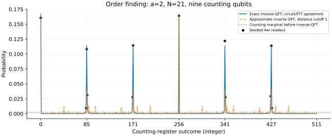

QFT & order finding
Fourier arithmetic with coherent-phase checks
Implemented a shared Fourier core for reversible arithmetic and bounded Shor order-finding studies.
Factors 15 with gate-built arithmetic; 21 with a compiled oracle.
Motivation
Correct basis-state probabilities can conceal incorrect controlled phases. The study tests whether Fourier arithmetic and phase estimation implement the intended coherent transformations.
Implementation
Qiskit and PennyLane share a checked QFT convention. Independent Fourier matrices, FFT states and arithmetic references test addition, multiplication, exponentiation and clean workspace. Continued-fraction candidates are validated modularly without a blind classical order-search fallback.
Results
Gate-built QFT modular arithmetic factors 15. A separately labelled compiled-permutation oracle factors 21. The order-6, base-5 example modulo 21 is retained as a negative control because it fails factor extraction despite finding a valid order.
Limitations
The N=21 oracle is a small-instance compiled construction, not scalable modular arithmetic. These are ideal bounded simulations. Gate comparisons use all-to-all connectivity and do not establish hardware performance or runtime advantage.
